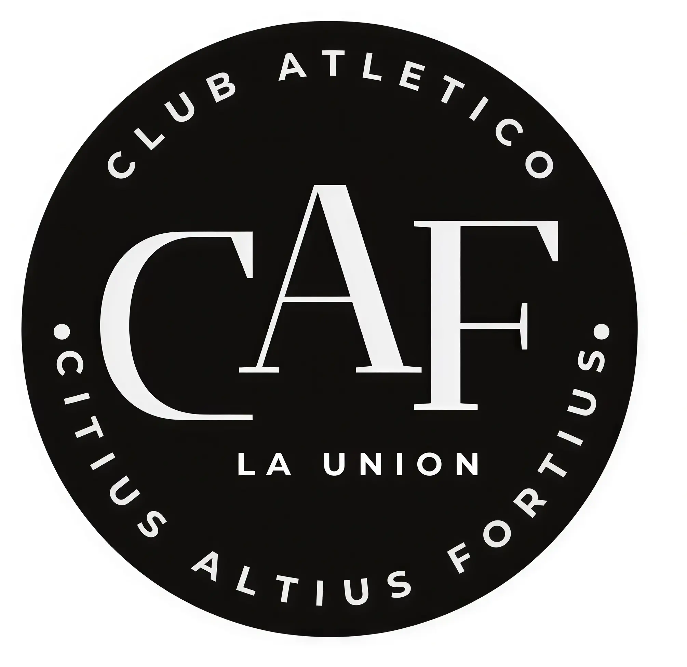
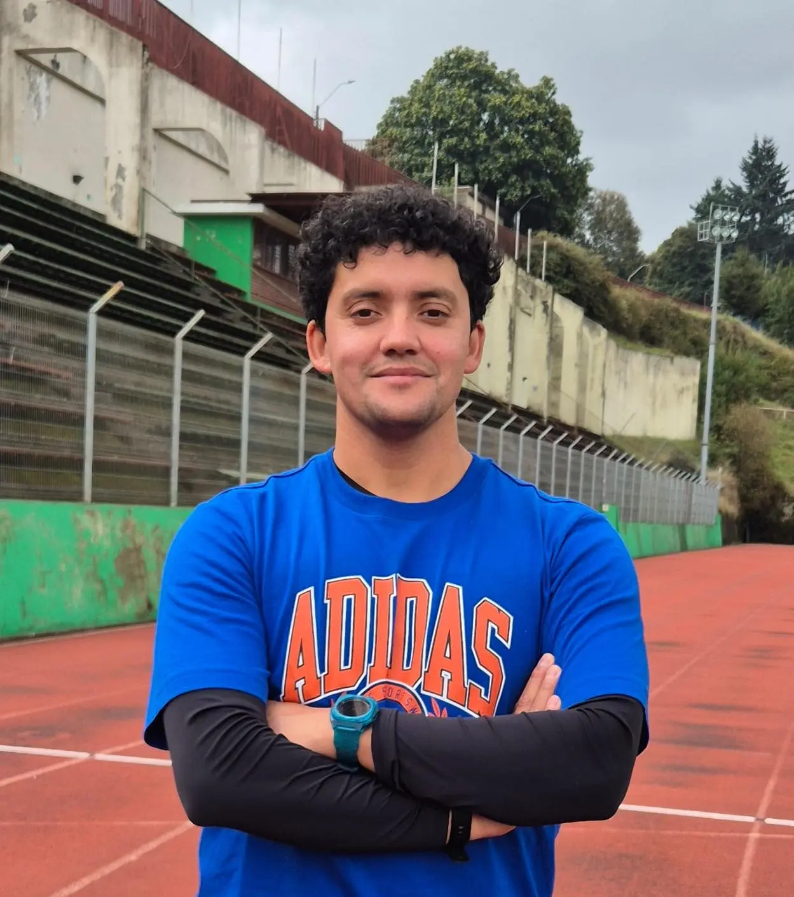
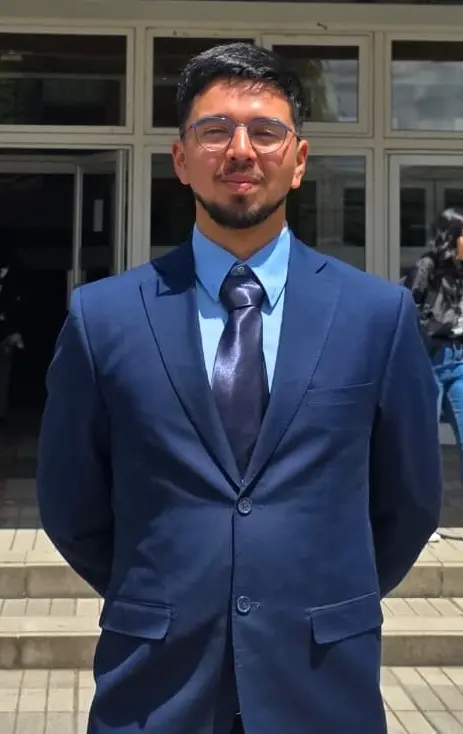

Valores, Liderazgo y Transparencia del CAF La Unión

El Club Atlético La Unión (CAF) nace de una visión clara: la continuidad deportiva. Todo comenzó en la Escuela Radimadi, donde nuestro fundador, Nicolás Cañoles, lideraba talleres deportivos financiados por el IND entre marzo y octubre. Sin embargo, al finalizar cada ciclo, los jóvenes atletas quedaban sin entrenamiento durante los meses de verano, interrumpiendo un proceso formativo vital.
Con el objetivo de no detener este crecimiento, Nicolás comenzó a formar un grupo de manera independiente, integrando una mensualidad que permitió mantener la constancia durante todo el año. Lo que inició como un pequeño grupo informal, pronto se transformó en un semillero de alto rendimiento.
A lo largo de los últimos 5 años, hemos logrado hitos significativos, clasificando ininterrumpidamente a nuestros atletas a los Juegos Deportivos Escolares y a los prestigiosos Juegos de la Araucanía, posicionándonos hoy como uno de los clubes que más aporta deportistas de élite a nuestra región.
En el año 2023, dimos el paso definitivo hacia la formalización, constituyéndonos legalmente como Club Atlético CAF. Nuestro nombre es un homenaje al lema olímpico "Citius, Altius, Fortius" (Más rápido, más alto, más fuerte), valores que guían cada paso de nuestros atletas, tanto en la pista como en la vida.
Head Coach: Nicolás Cañoles

Fundador y Head Coach
Con 37 años de vida y un profundo arraigo en nuestra comuna, Nicolás es el pilar fundamental y fundador del CAF. Profesor de Educación Media con mención en Educación Física, titulado de la Universidad de Los Lagos, ha volcado su trayectoria profesional al desarrollo motor y deportivo en la enseñanza básica. Desde 2021, ejerce su labor pedagógica en la Escuela Radimadi, donde combina su experiencia técnica con una vocación inquebrantable por formar no solo atletas, sino personas íntegras a través del atletismo.

Entrenador - Abril 2026
Con 26 años y una destacada trayectoria como ex-atleta regional, Jhon se integra al CAF en abril de 2026. Profesor de Educación Física licenciado de la Universidad de Los Lagos con distinción unánime, cuenta con una sólida especialización técnica respaldada por un Diplomado en Fisiología del Ejercicio y certificaciones FEDACHI en atletismo escolar y transición al alto rendimiento.
Haz clic para descargar la documentación necesaria para los socios y atletas.